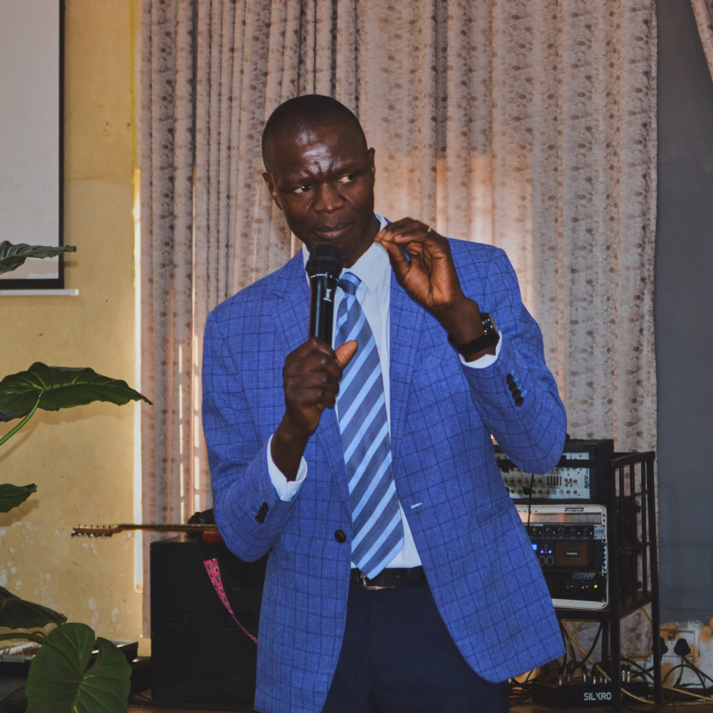

Year of Jubilee
Sample · 8 November 2026 · Joshua 1:1–9
Advancing to Possess
God has already given the promise; our part is to rise, step forward in faith and take possession.
Read the notes →

Our 2026 Theme
Isaiah 61:1-3 NKJV
“The Spirit of the Lord God is upon Me, because the Lord has anointed Me to preach good tidings to the poor; He has sent Me to heal the brokenhearted, to proclaim liberty to the captives…”
Kuwadzana Community Church (KCC) is the Faith Ministries church in Kuwadzana, Harare. We are one family with our sister churches, growing together in worship, the Word and genuine relationships.
Learn MoreOur Mission
Principles Of Ministry
Character is more important than ministry. Ministry is a gift from God whilst character is something you are responsible for.
Matthew 7:22-23Jesus came not to be served but to serve. Greatness in the house of God is measured by service.
Matthew 20:26-28Everything God does flows from love, so everything we do must too: love the Lord, love the brethren, love the lost.
1 Corinthians 13Those who obey can be trusted with authority.
Hebrews 13:17God has given to every person a measure of faith; we give ourselves fully in return.
Romans 12:1-3Our Pastor
Dr Chitanha is the main pastor of Kuwadzana Community Church, leading our church family in worship, the Word and discipleship through relationships.
Calendar
This week at Kuwadzana Community Church, where faith meets fellowship. Join us for worship, and follow our Facebook page for the latest announcements.
View More EventsEvery Sunday at 104168 1st Street, Kuwadzana 6. Praise, prayer and the Word for the whole family.
Child evangelism through sport with football legend Cheetah Antonio. All children are welcome. Contact us for the start time.
Small groups meeting in homes across Kuwadzana to pray, study and do life together. Contact us to find a group near you.
From The Pulpit
God has already given the promise; our part is to rise, step forward in faith and take possession.
Read the notes → Family
FamilyChildren are not the church of tomorrow — they are disciples today, and the whole church shares in raising them.
Read the notes → 34 Years of Grace
34 Years of GraceRemembering God's faithfulness in the past gives us confidence to trust Him with the future.
Read the notes →Prayer
Whatever you are facing, you don’t have to carry it alone. Send us your prayer request and our pastors and prayer team will stand with you.
Request Prayer